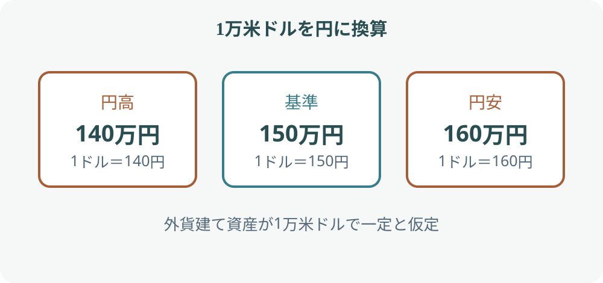
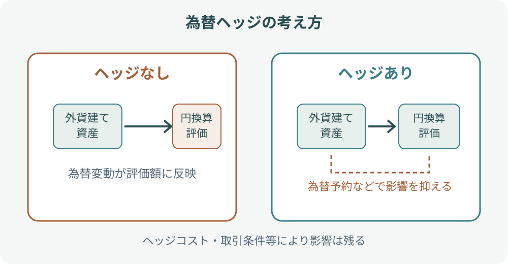

INVESTMENT BASICS
為替リスクとは？円高・円安が海外投資に与える影響
海外株式や外国債券、海外資産に投資する投資信託では、投資先の価格だけでなく、為替レートも円で見た損益を左右します。投資先が値上がりしても円高で円換算の利益が小さくなることがあり、反対に投資先の価格が変わらなくても円安で円換算額が増えることがあります。
1. 為替リスクの仕組み
米ドル建て資産を円で評価するとき、基本的な関係は「外貨建ての資産価値 × 為替レート」です。たとえば1万米ドルを保有し、1ドル＝150円なら円換算額は150万円です。
ここで使う為替レートは「1米ドルを何円で交換できるか」を表します。1ドル＝150円から140円へ下がるのが円高、150円から160円へ上がるのが円安です。同じ1万ドルでも、円高なら円換算額は小さく、円安なら大きくなります。

2. 円高・円安で円換算額はいくら変わる？
1万米ドル相当の資産を保有し、資産そのものの米ドル建て価格が変わらないと仮定します。
| 為替レート | 円換算額 | 150円時点との差 |
|---|---|---|
| 1ドル＝150円 | 150万円 | 基準 |
| 1ドル＝140円（円高） | 140万円 | −10万円（−6.7％） |
| 1ドル＝160円（円安） | 160万円 | ＋10万円（＋6.7％） |
150円から140円への変化は、為替レートの数字では約6.7％の下落です。円換算額も150万円から140万円になり、約6.7％減少します。「10円の円高」と「為替の価値が10％下落」は同じ意味ではありません。変化率を計算するときは、必ず変化前のレートを基準にします。
3. 資産価格と為替が同時に動く場合
実際の海外投資では、投資先の価格と為替レートが同時に変わります。円換算リターンは、外貨建て資産のリターンと、外貨の円換算価値の変化を掛け合わせて計算します。
（1＋外貨建て資産のリターン）×（1＋為替変化率）−1
ここでいう為替変化率は「外貨1単位を円に換算した価値」の変化率です。たとえば1ドル＝150円から135円になった場合、ドルの円換算価値は10％下落したことになります。
| 外貨建て資産 | ドルの円換算価値 | 円換算リターン |
|---|---|---|
| ＋10％ | −10％ | −1％ |
| ＋10％ | 変化なし | ＋10％ |
| ＋10％ | ＋10％ | ＋21％ |
| −10％ | ＋10％ | −1％ |
たとえば資産価格が10％上がっても、ドルの円換算価値が10％下がれば、1.10×0.90−1＝−1％となり、円ベースではわずかにマイナスです。反対に、資産価格の下落を円安が一部打ち消す場合もあります。資産価格と為替は常に反対方向へ動くわけではありません。
4. 海外株式の為替リスクを考えるときの注意
為替リスクは、投資信託の名前や基準価額の表示通貨だけでは判断できません。確認したいのは、ファンドが実際にどの国・地域の資産を保有し、どの通貨に対して為替ヘッジを行っているかです。
- 基準価額が円表示でも為替の影響は受ける：国内の投資信託は円で購入・換金しますが、組入資産が外貨建てなら、通常は円換算して基準価額に反映します。
- 投資先企業の売上通貨と株式の取引通貨は同じとは限らない：たとえば米国市場に上場する企業でも、売上や費用は複数の通貨にまたがる場合があります。株式の取引通貨だけで企業活動全体の為替感応度を判断することはできません。
- 全世界株式でも為替の影響は一つの通貨だけではない：複数の国・地域の株式を保有するファンドでは、組入資産の通貨や各国市場の値動きが組み合わさって円ベースの成績に影響します。
- 円安が必ず利益になるわけではない：円安による円換算額の押し上げがあっても、投資先の株価下落が大きければ円ベースでは損失になります。
全世界株式と米国株式では投資対象の地域や構成が異なります。為替だけでなく、どの市場・企業に分散しているかも合わせて比較するには、全世界株式とS&P 500の違いも参考になります。
5. 為替ヘッジの仕組みとコスト
為替ヘッジは、為替予約などを利用して将来の通貨交換条件をあらかじめ決め、為替変動が円換算損益に与える影響を抑える方法です。投資信託では「為替ヘッジあり」「為替ヘッジなし」といったコースで提供されることがあります。

| 比較 | 為替ヘッジなし | 為替ヘッジあり |
|---|---|---|
| 為替変動 | 円換算額に反映される | 影響を抑えることを目指す |
| 円安時 | 円換算額を押し上げる方向に働く | 円安による上乗せも抑えられる |
| 円高時 | 円換算額を押し下げる方向に働く | 円高による押し下げも抑えられる |
| ヘッジコスト等 | 為替ヘッジに伴うコストは通常発生しない | 金利差や市場需給等を反映したコスト・プレミアムが生じる |
ヘッジコストはなぜ発生する？
為替予約のレートには、原則として交換する2通貨の短期金利差などが反映されます。たとえば円の短期金利が米ドルの短期金利より低い局面で、米ドル資産を円に対してヘッジすると、一般にその金利差に相当するコストが発生します。逆に金利差の向きによっては、コストではなくプレミアムが生じる場合もあります。
ただし、実際のコストは金利差だけで決まるわけではなく、通貨間の需給や市場環境などによって金利差相当分を上回ることもあります。ヘッジコストは信託報酬とは別の要素として基準価額に反映されるため、信託報酬の数字だけを見ても、ヘッジあり・なしの運用コスト全体は比較できません。
為替ヘッジは為替リスクを完全になくすものではありません。ヘッジ比率、為替予約の更新時期、対象通貨と実際の取引通貨の違いなどにより、為替の影響が残ることがあります。また、円安によるプラスの影響も抑えられます。
6. 投資信託・ETFを比較するときの確認点
- 投資対象：どの国・地域・資産に投資し、組入資産の通貨は何か。
- 為替ヘッジ方針：ヘッジあり・なし、一部ヘッジのどれか。対象通貨とヘッジ比率も確認する。
- リターンの通貨：比較する基準価額・指数の成績が円換算か外貨建てか。配当込みかどうかもそろえる。
- 費用：信託報酬だけでなく、ヘッジコスト等が運用成績に与える影響も確認する。
- 資金を使う通貨と時期：将来円で使う資金なのか、外貨で使う予定があるのか。投資期間と合わせて考える。
商品名に「為替ヘッジあり」と書かれていても、コストやヘッジの対象・比率は同じとは限りません。目論見書や運用報告書、運用会社のFAQ・月次レポートで、具体的な方針と費用の扱いを確認しましょう。投資信託の基準価額が円で表示される理由や計算の仕組みは、全世界株式の投資信託を比較も参考になります。
まとめ
海外資産の円ベースの損益は、投資先の価格と為替の両方で変わります。円高・円安の影響は、外貨建て資産の値動きと分けて計算したうえで、最後に掛け合わせて考えることが重要です。為替ヘッジは影響を抑える選択肢ですが、コストや円安時の上乗せを抑える面もあります。商品を比較するときは、投資対象・通貨・ヘッジ方針・費用・資金を使う時期を合わせて確認しましょう。
参考資料
- 資産運用業協会「投資信託の基礎知識」（外貨建て資産の円換算と基準価額）
- 野村アセットマネジメント「『為替ヘッジ』の仕組みとは？」（為替予約とヘッジコスト）
- 三菱UFJアセットマネジメント「為替ヘッジとは何ですか」（ヘッジの効果と限界）
- 三菱UFJアセットマネジメント「ファンドの為替ヘッジコストは、どこで確認できますか」（コストの開示・基準価額への影響）
- 野村アセットマネジメント「為替とは？ 為替ヘッジとは？」（ヘッジコスト・プレミアム）